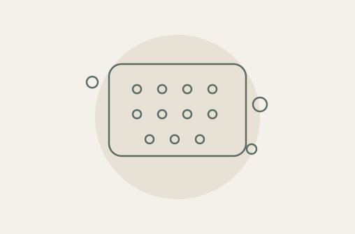

От пренатального скрининга до аллергодиагностики
Познакомьтесь с исследованиями ИНВИТРО для разных диагностических задач. Коротко о каждом тесте, его особенностях и материалах для врачей.

Познакомьтесь с исследованиями ИНВИТРО для разных диагностических задач. Коротко о каждом тесте, его особенностях и материалах для врачей.

№ 6НИПТ по крови беременной оценивает риск хромосомных нарушений у плода: анеуплоидии всех хромосом и 60 микроделеционных и микродупликационных синдромов. Это оценка риска, а не диагноз.
№ 3060 исследует микрофлору урогенитального тракта у женщин методом ПЦР. Оценивает состав нормальной и условно‑патогенной микрофлоры и выявляет ряд возбудителей инфекций и репродуктивно значимых вирусов.


№ 1881‑К оценивает сенсибилизацию к 120 аллергенам и 180 аллергокомпонентам и определяет общий IgE. Материал — сыворотка крови. Выявленная сенсибилизация не является диагнозом аллергии.
№ 3ФТ ФиброТест, 2 алгоритма: фиброз и некровоспалительная активность. № 4НФТ НЭШ‑ФиброТест, 5 алгоритмов: фиброз, стеатоз и стеатогепатит. Оба по показателям крови, это не ступени одного теста.


№ ГАСТР берут один раз, натощак, без стимуляции. № ГАСТР978 берут натощак и повторно после белкового завтрака: так уточняют причины сниженного гастрина‑17. Оба дают информацию о слизистой желудка.
№ 842 — исследование на скрытую кровь в кале с выявлением гемоглобина и гемоглобин‑гаптоглобинового комплекса.

Необходимость исследования и интерпретацию результатов определяет лечащий врач.